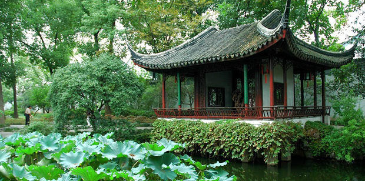

芙蓉榭
芙蓉榭是我国古代一种很美的建筑形式，凭借周围风景而构成，形式灵活多变。
芙蓉榭屋顶为卷棚歇山顶，四角飞翘，一半建在岸上，一半伸向水面，灵空架于水波上，伫立水边、秀美倩巧。此榭面临广池，池水清清，是夏日赏荷的好地方。漫步芙蓉榭，凭栏四顾，可见满池青翠，粉黛出水，风流丽质似亭亭玉立的仙子在碧波中美目流盼，微风骤起，掀起一片绿浪，送来阵阵荷香……尽情领略荷花的娇美、幽雅和高洁的风骨。
芙蓉榭是我国古代一种很美的建筑形式，凭借周围风景而构成，形式灵活多变。
芙蓉榭屋顶为卷棚歇山顶，四角飞翘，一半建在岸上，一半伸向水面，灵空架于水波上，伫立水边、秀美倩巧。此榭面临广池，池水清清，是夏日赏荷的好地方。漫步芙蓉榭，凭栏四顾，可见满池青翠，粉黛出水，风流丽质似亭亭玉立的仙子在碧波中美目流盼，微风骤起，掀起一片绿浪，送来阵阵荷香……尽情领略荷花的娇美、幽雅和高洁的风骨。